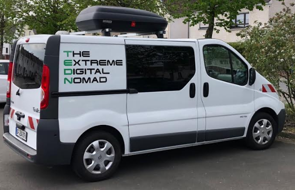
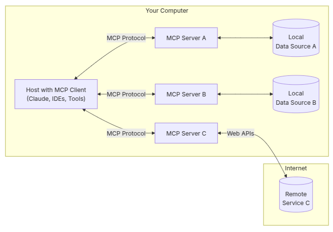

Augmented Software Engineering
Global-E - Scala Edition
29-May-2025
roland@tritsch.email
Checklist
- Phone off
- Dark theme
- Large font
- Recording started
Welcome

Roland

Roland
- (Fractional) CTO, VP Engineering, …
- Specialized in early (remote-first) start-ups
- The Extreme Digital Nomad, The Augmented Software Engineer
- Ex-IONA, Ex-Gilt, Ex-Nitro, Ex-Community, …
- SaaS, Distributed-Systems, Event-based Systems, …
- Functional Programing (Haskell, Scala, Elixir/Erlang, …)
- Using AI (almost) every day. Building AI-System(s) (as we speak)
- Still a novice. Still learning (every day)
The Extreme Digital Nomad

The Augmented Software Engineer

The ASE-Meetup
- Balance the fear and the hype!
- AI will replace all software-engineers: Probably not!
- AI has the potential to make you a better (more productive, more efficient, more effective) software-engineer: Very likely!
- By how much? I don't know! But more than 0%!
- Using it too much: Risky! Using it not enough: Waste (of time/opportunity)!
- My goal: Learning! Getting it right! Together!
Agenda
- Why am I here? Share know-how! Spread the word! Good outcome(s) …
- Tools, Tips & Tricks, Best Practices, Workflows, …
- MCP-Servers (for software-engineering)
- Focused on Scala :)
- Discussion/Q&A
Stage-Setting
- Using Windsurf/Codeium/Claude (and claude-code and warp/claude)
- (Still) Big Scala fan (just did the Advent-of-Code (again))
- (Right now) Writing Python/Typescript code (for the last 6 month)
Stage-Setting
- Using AI for …
- … reading/analysing/diagramming code
- … writing/changing/refactoring/eleminating code
- … analysing/fixing bugs/problems
- … everthing else … (terminal, A&D, DevOps/IaC, …)
- Let's do some live-coding, but …
Demo 1
- Warp - AI-assisted terminal(s)
- Pair vs. Dispatch, Models, Conversations, Contexts, …
- Find 10 largest files
- Implement fibonacci.sh
Tools
- IDEs - VsCode, Cursor, Windsurf, Intellij, Emacs, Vim, …
- Integrations - GitHub Copilot, Codeium, Continue, …
- Models - ChatGPT, Claude, DeepSeek, … (Ollama)
- Vibe - Warp, Claude-Code, …
Tips & Tricks
- Use rules/system-prompts (claude.md, claude.local.md, ~/.claude)
- Build (context), Plan, Do, Evaluate (!), Iterate, …
- Use MCP-Servers to add tools, resources, prompts, …
Demo 2
- 99-scala-problems
- Windsurf - Solve a problem (P58)
- "Assisted driving" experience
- Claude 3.7 Sonnet
- Chat vs. Cascade vs. Instructions vs. Completion
- .windsurfrules
Demo 3
- claude-code - Solve a problem (P58)
- "Self-driving car" experience
- Outcomes vs. Instructions
- "Get me there" (needs an evaluation criteria)
- Claude 4.0 Sonnet
- claude.md
Demo 4
- claude-code - Explain legacy code
- nmesos (Singularity, Mesos, Sidecar, …)
- Analysing the architecture of the repo/code
- Visualize it with (mermaid) diagrams
MCP-Servers

MCP-Servers
- Model-Context Protocol
- Released November 2024 by Anthropic
- Swiss-army knife to pimp your AI-client
- Easy to implement. Easy to use
- (Discoverable) Tools, Resources, Prompts, Samples
- GitHub, Slack, Google/EMail, HubSpot, … (500+)
Demo 5
- claude-code/MCP - Who is Roland?
- Who is the main contributor? Who is he?
- Review server code. Configure server
- Let's try again …
Take-aways
- Productivity improvements to be had (1.2x)
- 10 people team will feel like a 12 people team
- (Still) Early days. (But) Accelerating. Augmenting, not replacing
- (Managed) Learning (not too fast/slow/big/small) is key
- AI and Scala are friends (not foes)
Discussion/Questions